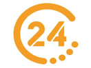

|
|
Anasayfa
IPTV VPN ile izle
IPTV VPN ile izle
IPTV VPN ile izle
TRT 1 HD+
TRT 1 HD
SHOW HD+
SHOW HD
ATV HD+
ATV HD
STAR HD+
STAR HD
KANAL D HD+
KANAL D HD
FOX HD+
FOX HD
TV8 HD+
TV8 HD
TV8.5 HD+
KANAL7 HD+
KANAL7 HD
A2 HD+
TEVE2 HD+
BEYAZ HD+
BEYAZ HD
360 HD+
TRT2 HD
TRTTURK HD+
TRTAVAZ HD+
TRTMUZIK HD+
BELGESEL KANALLAR

TRTBELGESEL HD+
TGRT BELGESEL
TLC HD+
DMAX HD+
HABER KANALLARI
SÖZCÜTV HD
SÖZCÜTV HD
HALKTV HD
HALKTV HD
TELE 1
TELE 1
KRT HD
KRT HD+
FLASH HABER
NTV HD+
HABERTURK HD+
CNN TURK HD+
BLOOMBERGHT HD+
HABERGLOBAL HD+
TRTHABER HD+
ULUSAL KANAL
TGRT HABER- 
TV 24
T.B.M.MECLIS TV
COCUK KANALLARI
TRTCOCUK HD+
MINIKAGO
MINIKACOCUK
SINEMA KANALLARI
SINEMA TV 1
SINEMA TV 2
SINEMA TV 3
SINEMA TV 4
SINEMA TV 5
SINEMA TV 6
SINEMA TV 7
SINEMA TV 8
SINEMA TV 9
SINEMA TV 10
SINEMA TV 11
SINEMA TV 12
SPOR KANALLARI
BEINSPORT 1 HD
BEINSPORT 2 HD
BEINSPORT 3 HD
BEINSPORT 4 HD
BEINSPORT 5 HD
BEINSPORT MAX 1 HD
BEINSPORT MAX 2 HD
BEINSPORT HABER HD
TIVIBUSPOR 1 HD
TIVIBUSPOR 2 HD
TIVIBUSPOR 3 HD
TIVIBUSPOR 4 HD
S-SPORT HD
S-SPORT 2 HD
SMARTSPOR HD
SMARTSPOR 2 HD
EUROSPORT 1 HD
EUROSPORT 2 HD
TRTSPOR HD
TRTSPOR HD
TRTSPOR YILDIZ HD
A-SPOR HD
CBC SPORT HD